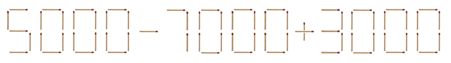
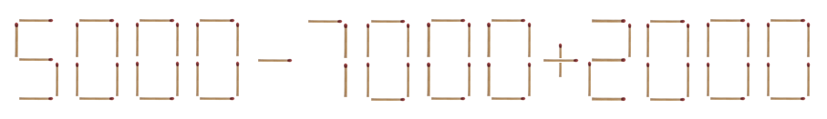

식은 0 이상 10000 미만의(한 자리에서 네 자리까지의) 수, +, - 로 이루어져 있다.
숫자는 0부터 9까지 각각, 아래와 같은 모양만 허용된다:

즉, 다음 예와 같은 모양으로 숫자를 만드는 것은 허용되지 않는다:
성냥개비로 그린 수식이 주어진다.

예를 들면 위 그림은 5000-7000+3000 을 나타내고, 그 계산 결과는 1000이다.
이 그림으로부터 숫자 3을 이루는 성냥개비 중 하나를 옮기면, 아래 그림과 같이 되고, 계산 결과가 0이 된다.

위 예와 같이, 성냥개비를 가능한 한 적게 옮겨서, 식의 계산 결과의 절대값이 가능한 한 작도록 해보자.
식은 0 이상 10000 미만의(한 자리에서 네 자리까지의) 수, +, - 로 이루어져 있다.
숫자는 0부터 9까지 각각, 아래와 같은 모양만 허용된다:
즉, 다음 예와 같은 모양으로 숫자를 만드는 것은 허용되지 않는다:

+, -로 이루어져야 한다.0~9) 혹은 기호(+, -)를 구성하는 성냥개비를 다른 숫자 혹은 기호로 옮기는 것은 허용된다.0+1을 8-1로 바꿀 수 있다.+를 1로 바꿀 수는 없다.111을 9로 바꿀 수는 없다.0으로 만드는 것은 허용된다. 이때 이것을 8진수로 해석하지 않고 10진수로 해석하여야 한다.8000 에서 성냥개비 하나를 옮겨서 0800으로 바꿀 수 있고, 이것의 값은 800이다.-1+10 이나 1--1 같은 수식은 입력되지 않는다.성냥개비로 그린 수식을 나타내는 문자열이 첫번째 줄에 주어진다.
※ 입력 데이터 중 2개는 입력 문자열의 길이가 100 미만이다.
입력 데이터 중 3개는 입력 문자열의 길이가 100 이상 1000 미만이다.
입력 데이터 중 5개는 입력 문자열의 길이가 1000 이상 10000 미만이다.
성냥개비를 옮긴 결과로 얻은 수식을 첫번째 줄에 출력한다.
5000-7000+3000
5000-7000+2000
각 숨겨진 입력 데이터별로 아래 규칙에 따라 점수를 받는다:
입력 식(입력으로 주어진 식)의 계산 결과를 I라고 하고,
출력 식(제출한 프로그램이 출력한 식)의 계산 결과를 R이라고 하고,
입력 식을 출력 식으로 만들기 위해 최소로 옮겨야 하는 성냥개비 개수를 N이라고 할 때,
해당 입력 데이터에 대한 포인트는 floor((I - |R|) / sqrt(N + 100)) 이다.
(|X| 는 X의 절대값이다. sqrt(X)는 X의 제곱근이다. floor(X) 는 X에서 소숫점 아래를 버린 값이다)
단, I < |R| 일 경우 0포인트이다.
예) 위의 출력 예시는 99포인트를 얻는다.
각 입력 데이터별로, 가장 포인트가 높은 답안이 10점을 받는다.
그보다 포인트가 낮은 답안은 floor(10 * (제출한 답안의 포인트) / (가장 포인트가 높은 답안의 포인트)) 점을 받는다.
따라서 이미 답안을 제출하여 점수를 받은 이후에, 누군가가 답안을 제출하여 어떤 입력 데이터에 대한 최대 포인트가 갱신되는 경우가 발생한다면, 점수가 감소하게 될 수 있다.